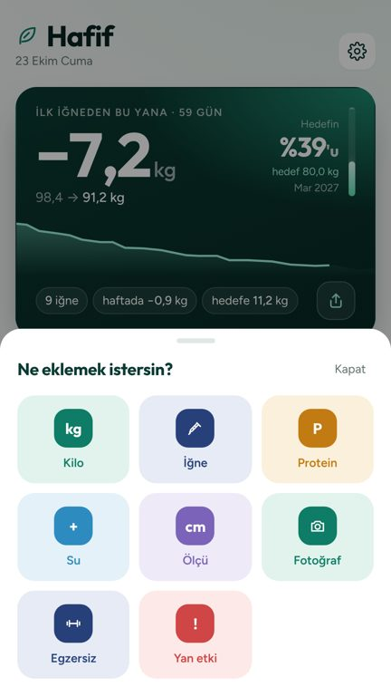
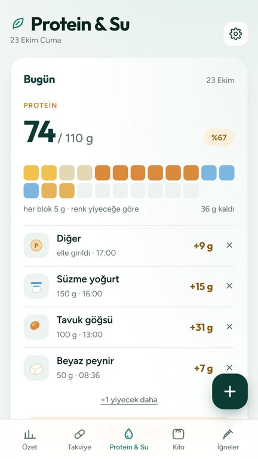

Akşam oldu,
36 gram protein eksik.
36 gram protein eksik.
Ne yesem?
🍗🥗🍚
Tavuk şiş ve bulgur
Mercimek çorbası ve yoğurt
Hafif · Google Play'de
Toplantı uygulamanın son hâli üzerinden yapıldı: 2.0 dalı, yeni mağaza görselleri ve 40 saniyelik tanıtım videosu. Her katılımcı artıları, eksikleri ve önerilerini söyledi; değiştirilmesi önerilen her şey için bir öneri görseli hazırlandı.
Ne yesem? Protein sekmesinde kaydırınca çıkıyor, Fotoğraflar Kilo'nun en altında. Güncellemeden sonra bir kez "2.0'da yeni" sayfası, Ne yesem? de protein kartının hemen altına.
Yanında hep aynı üç güven sözü: hesap yok, reklam yok, veri telefonunda. "Sade defter" ve "sakin yardımcı" slogan olarak emekliye ayrılır; "sakin" markanın sesi olarak kalır.
Gezinme ve düğmeler çizgi ikon kalır. İçerik katmanı (yemek önerileri, koç, boş ekranlar, + paneli) emojiye geçer; böylece uygulama mağaza görselleriyle aynı dili konuşur.
Play'de görünen ev adresi ve "ugurbektas" geliştirici adı, veri güvenliği formu ("Hafif ekibine gönder" yüzünden), 2.0'ın Ne yesem? dahil yeniden derlenmesi.
Stajyerin fikri; masada en çok destek alan yeni özellik. Oruçta ilaç kullanımı için ilk ekranda "doktoruna danış" notu şart.
"Mağaza artık sıcak ve emojili, uygulama ise ince çizgili ve serin. Kullanıcı indirdiğinde başka bir şirketin ürününü açmış gibi olmamalı."

"Elimizde rakiplerin hiçbirinde olmayan bir kanca var: 'Akşam ne yesem?' Bunu ilk üç saniyeye koymazsak harcamış oluruz."
Üç kısa video önerisi (her biri 6–10 saniye, aynı şablon):
1. "Akşam oldu, protein eksik." → Ne yesem?
2. "Pazar iğne günü, kalem bitiyor mu?" → doz planı ve kalem uyarısı
3. "Tartı üç gündür aynı." → duraklama kartı: "belin incelmiş"
Mağaza videosunun açılışı da aynı mantıkla değişmeli: logo yerine ilk karede "Kilo verirken ihtiyacın olan her şey" ve emojiler birlikte.
"Marka sesi uygulamanın içinde çok iyi; koç hiç suçlamıyor. Ama dışarıda üç farklı slogan ve bir kişinin adı dolaşıyor."
"Bir gazeteci bizi bulmak isterse Play sayfasından başka gidecek yeri yok. Orada da bir ev adresi görüyor."
Hafif, kilo verirken iğneyi, tartıyı, proteini ve suyu hesap açmadan takip eden bir Android uygulaması. Bütün veriler kullanıcının telefonunda kalır; reklam ve takip yoktur. Uygulamayı, kendi tedavisini takip etmek isteyen bir kullanıcı geliştirdi.
Hafif tıbbi cihaz değildir, doz önermez. Sağlıkla ilgili sorular için doktorunuza danışın.
"Özellik yaptık ama kullanıcı onları bulamıyor. 2.0'ın en büyük riski kod değil, keşfedilmemek."

"Türkiye'de kilo veren herkesin yılında bir ay her şey değişiyor: Ramazan. O ay hiçbir uygulama ne yapacağını bilmiyor."
İftar ve sahur saatine göre hatırlatmalar; protein ve suyu iftar–sahur arasına böler; Ne yesem? iftar ve sahur menüsü önerir.
Masa: herkes destekledi. Şubat 2027 başından önce. İlk ekranda "oruçta ilaç kullanımını doktoruna danış" notu.Haftalık özetten Instagram hikâyesi: kilo yazmadan "Bu hafta proteinde 5 gün hedefteydim".
Masa: Reklamcı ve PR çok sevdi; ücretsiz organik tanıtım. 2.1.Haftanın Ne yesem? önerilerinden alışveriş listesi.
Masa: güzel ama önce Ne yesem? kullanımı görülmeli. Sonra.Bir kodla yalnızca seriyi paylaşmak.
Masa: Developer ve Brand karşı çıktı. Sunucu gerekir, "veri telefonunda" sözü bozulur. Rafa kalktı.Wear OS'ta tek dokunuşla +250 ml.
Masa: widget'lar zaten var; talep görülürse.Grafiker: mağaza ile uygulama aynı dili konuşmalı. Brand Manager: 1.9.0'da emojiden çizgiye bilerek geçildi, geri dönüş kafa karıştırır.
Karar: iki katman. Gezinme çizgi, içerik emoji (karar 3).
Reklamcı: Plus'ın değeri artar. PR ve Brand: insanların uygulamayı bıraktığı anlara kilit koymak güveni zedeler.
Karar: ücretsiz kalsın. Plus'ın vitrini fotoğraflar, doz planı ve rapor.
Reklamcı: "kilo başına maliyet" çok konuşulur. PR: reçeteli ilaçla para konusu Google'ın ve kamuoyunun hassas olduğu bir alan.
Karar: özellik yapılırsa yalnızca uygulamanın içinde; mağazada ve reklamda hiç geçmez.
Stajyer: yalnız takip zor, sosyal yön lazım. Developer: sunucu demek, "veri telefonunda" sözü bozulur.
Karar: rafa kalktı. Sosyal ihtiyaç rakamsız paylaşım kartıyla karşılanır.